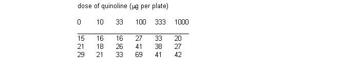
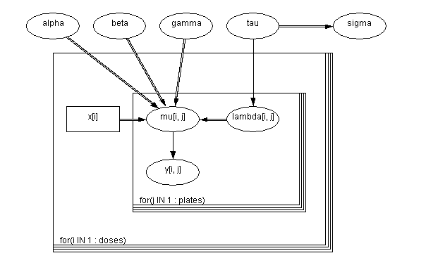

![[salm0]](salm0.bmp) Salm: extra - Poisson variation
Salm: extra - Poisson variationin dose - response study
Breslow (1984) analyses some mutagenicity assay data (shown below) on salmonella in which three plates have been processed at each dose i of quinoline and the number of revertant colonies of TA98 Salmonella measured. A certain dose-response curve is suggested by theory.

This is assumed to be a random effects Poisson model allowing for over-dispersion. Let x i be the dose on the plates i 1, i 2 and i 3. Then we assume
y ij ~ Poisson( m ij )
log( m ij ) = a + b log(x i + 10) + g x i + l ij
l ij ~ Normal(0, t )
a , b , g , t are given independent ``noninformative'' priors. The appropriate graph is shown

BUGS language for salm example
model
{
for( i in 1 : doses ) {
for( j in 1 : plates ) {
y[i , j] ~ dpois(mu[i , j])
log(mu[i , j]) <- alpha + beta * log(x[i] + 10) +
gamma * x[i] + lambda[i , j]
lambda[i , j] ~ dnorm(0.0, tau)
cumulative.y[i , j] <- cumulative(y[i , j], y[i , j])
}
}
alpha ~ dnorm(0.0,1.0E-6)
beta ~ dnorm(0.0,1.0E-6)
gamma ~ dnorm(0.0,1.0E-6)
tau ~ dgamma(0.001, 0.001)
sigma <- 1 / sqrt(tau)
}
Data ( click to open )
Inits for chain 1 Inits for chain 2 ( click to open )
Results
A 1000 update burn in followed by a further 10000 updates gave the parameter estimates